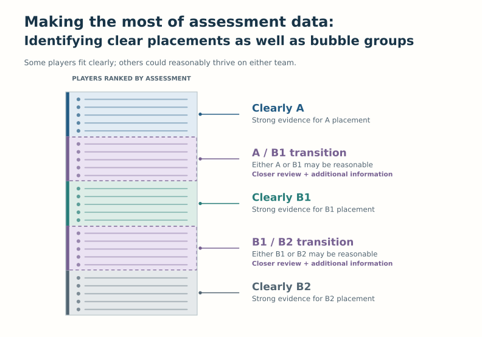
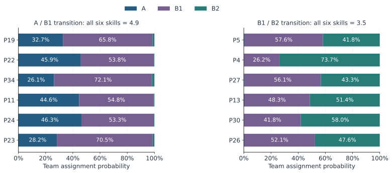
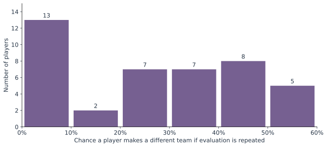
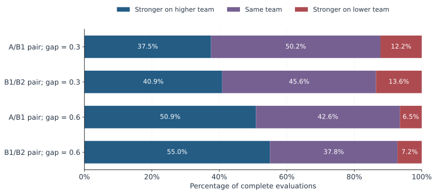
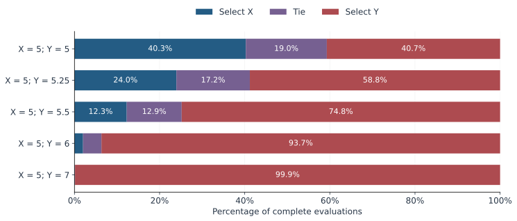
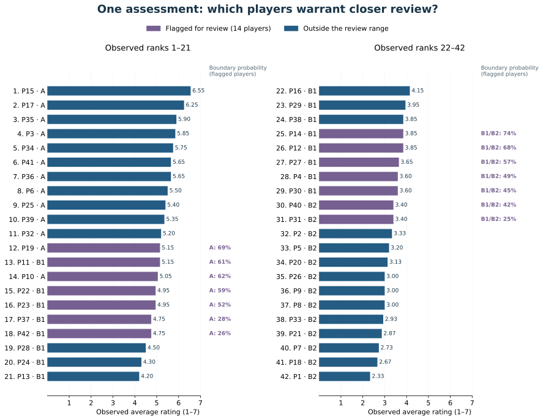
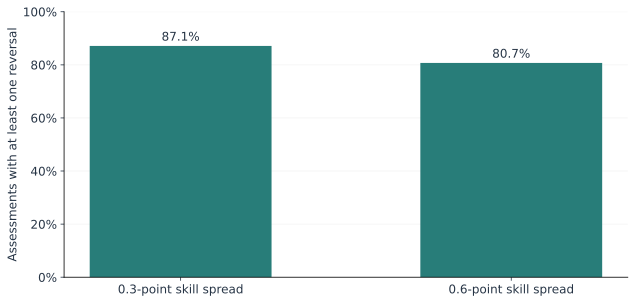

The Power and Limitations of Assessment Data in Determining Team Placement
Team placement is a difficult decision made with imperfect information. There is often no single “right” set of rosters: many children could reasonably thrive on either of two teams. The goal is to place players where they will develop, contribute and experience an appropriate level of challenge.
The concerns motivating this report are that Minneapolis Storm relies on assessment scores as the sole basis for placement and resists additional information—such as structured coach feedback from previous seasons or physical and emotional readiness—because it may introduce bias. Numerical scores can appear to offer an objective, fair answer. But using numbers alone does not establish that a decision is unbiased or well supported.
Players receive integer ratings from 1 to 7 from multiple evaluators over several days. Two sources of uncertainty matter: the relationship between performance and true skill—a short sample of on-ice performance cannot capture every aspect of a player’s ability—and measurement—evaluators observing many players briefly may miss important information or interpret the scale differently. Persistent differences in how evaluators perceive players can also systematically affect scores.
According to Storm administrators, no other information is included in team placement decisions. Families also receive no information about assessment criteria, player scores, or areas for improvement. Although administrators consistently say that placements are based on “the data,” families cannot see what was measured or how the results support a placement. This lack of transparency contributes to mistrust in the organization.
Additional information could help inform decisions when assessment data are inconclusive, if it is gathered and considered consistently. Incorporating more information does not automatically introduce bias, and it does not automatically remove it. A consistent, documented process can reduce opportunities for favoritism: decide beforehand what information is relevant, request comparable evidence for players under review, and explain how it affects placement.
Three Goals for a Better Process
- Place players where they will thrive. Use scores where they distinguish skill reliably; review close decisions using consistently gathered information about performance, development and readiness.
- Support player development. Publish the assessment criteria and rating descriptions—for example, what distinguishes a 6 from a 7—and provide each player with understandable feedback and areas for improvement.
- Build trust. Explain how scores lead to placements, acknowledge the limitations, document how additional information is used, and provide a clear way to ask questions and correct errors.
The concerns raised by players and families make transparency especially important. Simply communicating a placement misses an opportunity to explain the evidence and support development. Being open about a difficult decision, and about efforts to improve it, can help build trust without promising certainty that the assessment cannot provide.
Demonstrated Weaknesses in the Current Process
Below, I use simulated data to demonstrate the imperfect nature of assessment data and how over-reliance on single values from these data can produce unwanted results.
The first case study simulates an assessment process for placing 42 skaters on three teams: A, B1 and B2. Five evaluators assign ratings across four sessions, with early splits determining which players remain under consideration for A. The simulation demonstrates that equally skilled players can receive different placements when the evaluation is repeated, despite no changes to their underlying skills or the evaluation process. It also demonstrates that a slightly stronger player can be placed on a lower team than a weaker player.
The second case study evaluates the reliability of assessment data in determining placement of two equally skilled goalies. Using the current method—selecting the goalie who scores higher on more evaluation days—it demonstrates that an apparent winner usually emerges even when neither goalie is truly more skilled. A further comparison gives one goalie a small skill advantage and shows that the method can still select the weaker goalie.
In both case studies, underlying skills and evaluator tendencies remain fixed while performances and observations vary. This isolates how uncertainty can affect the outcomes even when the scoring and selection rules are applied faithfully.
The simulations illustrate several key limitations in how assessment data are currently used
- Equal skill does not guarantee stable skater placement. For example, simulation results demonstrate that when skaters near roster boundaries have equal skill, their average chance of being placed on a different team in a second assessment is approximately 48%.
- The goalie method usually produces an apparent winner between equal players. When both goalies are equally skilled, one is selected over the other in 81% of assessments; only 19% end in a tie.
- Small skill differences mean that the stronger player is not always identified. For skaters with small skill differences, the stronger player is placed on a lower team in approximately 13% of assessments. For goalies with small skill differences, the stronger goalie is not identified in approximately 25% of assessments, including ties and selection of the weaker goalie.
A Practical Improvement: Identify Decisions That Need Review
Assessment data can help distinguish players with strong evidence for a placement from those whose placement remains uncertain. For a defined “bubble group,” additional information could include targeted observation in subsequent evaluation sessions or structured coach feedback from previous seasons.
How Can the Data Tell Us When Placements Are Uncertain?
One approach is to estimate how strongly the observed scores support each placement. Existing evaluator scores can be used to estimate uncertainty in player assessments and identify a range of plausible underlying skill levels that could explain those scores. Statistical methods can estimate the probability that a player ranks above a team boundary, rather than treating a slightly higher score as definitive evidence.

For example, in one simulated assessment, P19 is placed on A with an average score of 5.15, while P22 is placed on B1 with an average of 4.95. The model estimates their probabilities of ranking in the top 14—the reference A-team range—as 69.2% and 59.4%. It also estimates only a 57.1% probability that P19 is more skilled than P22. The scores separate them, but the evidence does not strongly distinguish their skills.
We could flag players with a 25–75% probability of ranking above a team boundary for closer review. Both players in this example would be flagged. The same approach can be used at the B1/B2 boundary. This probability range is an illustrative review policy, not a universal rule: it could be widened or narrowed depending on how cautiously the organization wants to treat close decisions.
As a simpler check, administrators could examine closeness to a team boundary and variation across days. A player just above or below a score split, or whose session scores vary substantially, may warrant more observation. Disagreement among evaluators, or a ranking that changes when one evaluator’s ratings are omitted, can also signal that more information could be helpful.
Explore the skater and goalie case studies, figures and score examples
Case Study 1: Skater Placement
Would equally skilled players receive the same placement if assessed again? Often they would not. Transition players had an average 47–48% chance of receiving a different team in a second assessment.
Can a slightly stronger player be placed below a weaker player? Yes. For a specified pair at each boundary separated by 0.3 skill points, this occurred in approximately 12–14% of assessments.
Can the data identify placements that warrant closer review? An uncertainty model can flag players whose probability of being above a reference team boundary falls between 25% and 75%. A worked example below shows how this can support review of close decisions.
All 42 players participate in sessions 1–2. Approximately the upper two-thirds remain under consideration for A and scrimmage in session 3; approximately 15 then advance to an external scrimmage. In the final session, invited players and remaining players scrimmage separately. The same five evaluators assess players throughout. Rankings use average ratings across attended sessions, so attending four sessions does not automatically give an advantage over attending three.
Equally Skilled Players Can End Up on Different Teams
What happens when equally skilled players are close to a team boundary? Each panel follows six players with exactly the same underlying skill. Despite their equal ability, the assessment process can place them on different teams. The figure shows how often each player is assigned to A, B1 or B2 across repeated assessments.

Equal ability does not ensure equal placement. Persistent evaluator-player impressions can give equally skilled players different selection probabilities, while changing performances and observations make their placements vary across assessments.
How Stable Is Each Player’s Placement?
Some players are placed consistently, while others could readily move between teams. This figure groups all 42 skaters by their chance of receiving a different placement on a second assessment. Farther to the right means less consistent placement.

Placement reliability varies across players. A single team assignment does not reveal whether that decision is highly stable or could easily change in another assessment. Repeatability is different from whether a placement is appropriate.
Small Skill Differences Can Be Reversed
Can a stronger player be placed on a lower team than a weaker player? This figure compares two players near each team boundary: one slightly stronger and one slightly weaker. It shows how often the stronger player ends up on a higher team, the same team, or a lower team. Placement on a lower team reverses their true skill ordering.

With a 0.3-point difference, the stronger player is placed below the weaker player in approximately 12–14% of assessments. With a 0.6-point difference, this falls to approximately 6–7%. These are rates for the selected pairs, not the percentage of all players placed incorrectly.
Example: A Stronger Player Is Placed on a Lower Team
The following scores come from one simulated assessment. P5 is slightly stronger than P26, but receives lower observed ratings and is assigned to B2 rather than B1.
| Player | True skill | Rated sessions | Mean rating | Assigned team |
|---|---|---|---|---|
| P5 | 3.65 | 3 | 3.27 | B2 |
| P26 | 3.35 | 4 | 4.05 | B1 |
The stronger player is placed on B2; the weaker player on B1. The averaging and roster rules have been followed. The observed averages reflect uncertain performance and ratings, rather than the fixed true skill ordering.
See the underlying integer ratings
| Session | P5 ratings | P26 ratings |
|---|---|---|
| 1 | 3, 1, 3, 5, 2 | 6, 1, 5, 4, 4 |
| 2 | 5, 3, 5, 7, 2 | 6, 1, 5, 6, 3 |
| 3 | Not evaluated | 4, 4, 3, 7, 1 |
| 4 | 4, 1, 3, 3, 2 | 4, 2, 4, 7, 4 |
This example was chosen to illustrate a reversal; its frequency is estimated using all assessments. Scores were averaged across attended sessions. A skill-order reversal alone does not establish poor overall team fit; development, readiness and team roles are separate considerations.
Case Study 2: An Apparent Winner Can Emerge Even When Goalies Are Equally Skilled
Does the current method distinguish equally skilled goalies? It frequently selects one despite their equal ability: 81% of assessments produced a winner and 19% produced a tie.
Does a small skill advantage reliably lead to selection? With X at true skill 5 and Y at 5.5, the method selected Y in approximately 75% of assessments, selected X in 12%, and tied in 13%.
What could an uncertainty analysis add? It could estimate the probability that Y is better and the probability that the goalies’ skills are within a meaningful margin. The outcome simulations below assess the current rule; they do not themselves provide posterior probabilities from a single score sheet.
In the equal-skill scenario, two goalies with equal underlying skill are evaluated. An appropriate interpretation would be that the assessment data do not establish a meaningful skill difference. Flagging the result as inconclusive could prompt consideration of other relevant factors before making a placement decision. Exact equality is known here because this is a simulation; in practice, an uncertainty analysis would assess what the observed evidence supports.
Six evaluators rate both goalies on days 1–2; a separate group of two rates both on days 3–6. Each day’s ratings are summed, and the goalie winning more days is selected. Tied days award neither goalie a win; an overall tie remains a tie.
How Often Does the Current Method Select Each Goalie?
Each row below represents a different skill comparison. X always has true skill 5. Y starts at the same skill and then becomes progressively stronger. Each bar shows how often the method selects X, selects Y, or produces a tie.

Small differences are harder to distinguish reliably. With equal skill, the method usually produces an apparent winner. As Y’s advantage grows, selecting Y becomes more consistent. A tie under the current rule is an arithmetic outcome; “inconclusive evidence” is a separate interpretation based on uncertainty.
Exact goalie outcome percentages
| True skills X / Y | Select X | Tie | Select Y |
|---|---|---|---|
| 5 / 5 | 40.3% | 19.0% | 40.7% |
| 5 / 5.25 | 24.0% | 17.2% | 58.8% |
| 5 / 5.5 | 12.3% | 12.9% | 74.8% |
| 5 / 6 | 2.0% | 4.3% | 93.7% |
| 5 / 7 | 0.015% | 0.1% | 99.9% |
Examples: An Apparent Winner Between Equal Goalies, and Selection of the Weaker Goalie
These examples show two possible outcomes: selecting one goalie when both are equally skilled, and selecting the weaker goalie when their skills differ slightly. They were chosen to illustrate how these outcomes can occur. The percentages in the figure above show how often each outcome occurred across all simulated assessments.
X = 5; Y = 5
Neither goalie is truly more skilled.
| Day | Evaluators | X score sum | Y score sum | Day winner |
|---|---|---|---|---|
| 1 | 6 | 26 | 24 | X |
| 2 | 6 | 32 | 31 | X |
| 3 | 2 | 11 | 13 | Y |
| 4 | 2 | 14 | 11 | X |
| 5 | 2 | 12 | 12 | Tie |
| 6 | 2 | 9 | 13 | Y |
Current method selects X: 3 daily wins versus 2.
See every integer rating
Day 1: X [4, 5, 4, 6, 4, 3]; Y [4, 4, 4, 5, 5, 2]
Day 2: X [5, 6, 6, 7, 5, 3]; Y [4, 5, 6, 7, 6, 3]
Day 3: X [7, 4]; Y [7, 6]
Day 4: X [7, 7]; Y [7, 4]
Day 5: X [7, 5]; Y [6, 6]
Day 6: X [6, 3]; Y [7, 6]
The rule produces a winner despite identical underlying skill.
X = 5; Y = 5.5
Y is truly more skilled than X.
| Day | Evaluators | X score sum | Y score sum | Day winner |
|---|---|---|---|---|
| 1 | 6 | 32 | 31 | X |
| 2 | 6 | 30 | 33 | Y |
| 3 | 2 | 10 | 10 | Tie |
| 4 | 2 | 13 | 11 | X |
| 5 | 2 | 9 | 14 | Y |
| 6 | 2 | 12 | 11 | X |
Current method selects X: 3 daily wins versus 2.
See every integer rating
Day 1: X [5, 6, 6, 7, 5, 3]; Y [5, 5, 6, 7, 5, 3]
Day 2: X [5, 5, 6, 7, 5, 2]; Y [6, 6, 6, 7, 5, 3]
Day 3: X [6, 4]; Y [6, 4]
Day 4: X [7, 6]; Y [6, 5]
Day 5: X [6, 3]; Y [7, 7]
Day 6: X [7, 5]; Y [7, 4]
The rule selects the weaker goalie. Day-to-day performance and imperfect ratings overcome a small true advantage.
Using One Assessment to Identify a Bubble Group
Which players’ placements warrant closer review? This example uses one set of evaluator scores to estimate uncertainty about players’ underlying skills. A player is flagged when their probability of ranking above either reference team boundary lies between 25% and 75%, inclusive. The range is an adjustable review policy, not a universal statistical standard.
The figure below shows all 42 players ordered by their observed average rating. Purple bars mark the 14 players flagged for additional information; navy bars mark players outside the review range. Each player’s current assigned team appears beside their ID. The percentages beside purple bars show the model’s probability of ranking above the relevant boundary.
The ranking alone separates players; the probability estimates reveal where the distinction is uncertain. Additional observation or consistently gathered coach information could be directed to these players. Being outside the review range means stronger support under this model, not certainty.

An example of identifying uncertainty from one dataset
In a single simulated skater assessment, P19 makes A and P22 makes B1, with mean ratings 5.15 and 4.95. Both have true skill 4.9. Using only the observed ratings, an ordinal uncertainty model estimates a 57.1% probability that P19 is better than P22. Their probabilities of ranking in the top 14 are 69.2% and 59.4%, respectively: both fall inside the proposed 25–75% review range. The reference rank boundary is fixed at 14; the actual example roster has 13 A players.
The scores separate them; the evidence supports reviewing both. This example is separate from the deliberately selected skater reversal above. Its probabilities come from 8,000 plausible explanations of one set of observed scores, called posterior draws. These draws represent uncertainty about the players’ underlying skills; they are not additional evaluations. The model does not receive true skill or group labels; it uses fixed illustrative noise assumptions, evaluator effects and session performance. The technical assumptions are given in the appendix.
Recommendations for a Robust and Transparent Process
- Define and publish the criteria. Use observable, age-appropriate rubrics and clear examples for rating levels. Explain how criteria and additional best-fit considerations affect placement.
- Assess the strength of the evidence. Use assessment data to their full potential by assessing the strength of evidence for a decision and identifying players for whom the assessment data do not provide strong evidence for placement on one team versus another.
- Consider additional information when assessment data are inconclusive. The proposed approach illustrates how “bubble group” players could be flagged. Additional information is needed to determine the placement of these players because the assessment data do not reliably distinguish between the possible placements.
- Explain the decision. Give families their own player’s scores, development feedback and placement rationale, while protecting other players’ privacy. Include a process for correcting errors and reviewing close decisions.
Technical appendix: models, assumptions and exploratory analyses
Appendix: Simulation Models, Assumptions and Analysis
The simulations distinguish a player’s fixed underlying skill from their observed integer ratings. They measure the behavior of specified assessment rules under illustrative assumptions. They do not estimate actual association error rates or identify individual children who should change teams.
A1. How integer ratings are generated
For player i, evaluator j and session d, an unobserved scoring impression is:
- θi: fixed true skill on the anchored 1–7 scale.
- aj: evaluator’s persistent scoring offset (generosity or severity).
- wj: positive persistent scale width; values above 1 expand skill differences, values below 1 compress them.
- uid: that player’s session performance deviation, shared by all evaluators watching the player.
- bij: persistent evaluator-player impression, included for skaters (SD 0.35), set to zero for goalies in this report.
- εidj: independent observation/rating error.
The rating is an ordinal category determined by six thresholds, not a rounded continuous score:
c = (−2.5, −1.5, −0.5, 0.5, 1.5, 2.5).
Thus every evaluator rating is exactly one integer from 1 to 7. For a neutral evaluator with no noise, skills near 5 correspond to category 5. A fractional true skill such as 5.5 is allowed, but an evaluator cannot give a fractional rating. Category limits also compress observations near the top or bottom of the scale.
A2. Distributions and what stays fixed
bij ∼ Normal(0, 0.35²) for skaters; εidj ∼ Normal(0, σrating²).
log(wj) ∼ Normal(−s²/2, s²), s = √log(1.25).
Widths are restricted to 0.5–1.75: out-of-range draws are rejected and resampled for skaters, and clipped to these limits for goalies. True skills and the sampled evaluator offsets, widths and skater impressions are held fixed across all repeated assessments. Only session performances and independent observation errors are redrawn. The repeatability findings therefore describe one fixed panel, not variability between different panels.
| Quantity | Skaters | Goalies |
|---|---|---|
| Performance SD, early sessions | 0.65, sessions 1–2 | 0.5, days 1–2 |
| Performance SD, later sessions | 0.9, sessions 3–4 | 1.0, days 3–6 |
| Independent rating error SD | 1.25 | 0.5 |
| Returning evaluators | Same five throughout | Six on days 1–2; different two on days 3–6 |
| Assessments per skill scenario | 10,000 | 100,000 |
These values describe the calculations underlying this report. Higher later-day goalie performance variability is a scenario assumption, not a mathematical consequence of fewer evaluators; fewer evaluators separately reduce the number of independent observations.
A3. Skater population and staged selection
| Population group | Players | True skill in equal-transition scenario |
|---|---|---|
| Clear A | 7 | 6.1–6.7 |
| Likely A | 4 | 5.35–5.65 |
| A/B1 transition | 6 | All 4.9 |
| Core B1 | 8 | 4.1–4.5 |
| B1/B2 transition | 6 | All 3.5 |
| Likely B2 | 4 | 2.85–3.15 |
| Clear B2 | 7 | 2.1–2.7 |
For total transition spreads of 0.3 or 0.6, six evenly spaced skill values replace each equal-skill group, centered at 4.9 or 3.5. The spacing is spread/5: 0.06 or 0.12 between adjacent players. Other skills remain unchanged.
Di is the set of attended sessions. This is also the average of the session means, because each attended session has five evaluators. Missing observations are not scored as zero. Scores from three-session and four-session players are compared on the same scale.
At each split, eligible players are sorted by their current mean score. The largest adjacent score gap within a specified range determines the cutoff: 26–30 advance after session 2; 14–16 are invited after session 3; final A size is near 14 among invited players; cumulative A+B1 size is near 28. Final A eligibility is restricted to invited players, with at least one invited player outside A. This is an explicit approximation of the described process, not a verified association rule. Cutoffs and roster sizes can vary.
When gaps are equally large, the cutoff nearest the nominal size is preferred, then the smaller cutoff. Equal scores are ordered by fixed, skill-independent player IDs. Zero-gap cutoffs are flagged. This tie-handling completes rosters but adds no evidence of a skill difference.
A4. Goalie selection rule
Wg = Σd=1…6 𝟙(Sgd > Sother,d).
Select X if WX > WY, select Y if WY > WX, otherwise report a tie. Daily ties award neither a win; there is no coin flip. Every day contributes one possible win regardless of evaluator count or assessment context. True X skill is 5; true Y skill is 5, 5.25, 5.5, 6 or 7.
A5. Outcome frequencies, repeatability and reversals
P̂(different team on repeat)i = 1 − Σt∈{A,B1,B2} p̂it².
The repeatability formula describes two independent assessments with the same fixed skills and evaluator tendencies. It averages over the possible first placements; it is not the probability that one observed placement is wrong. Conditional on a specific first team t, the repeat-change probability would instead be 1 − pit.
A pairwise reversal occurs when θi > θk but player i is assigned to a lower team than player k. Same-team placement is recorded separately. The main pair figure follows the highest- and lowest-skill members of each six-player group, with denominators including all 10,000 assessments.
A6. Additional Figure: Reversals Somewhere Within a Transition Group
Among six closely skilled players, how often is at least one stronger player placed on a lower team than a weaker player? This figure counts an assessment if any such reversal occurs within the group. It summarizes a group-wide event rather than the risk for an individual player.

These percentages do not mean 81–87% of players are placed incorrectly. They mean at least one skill-order reversal occurs somewhere within a six-player transition group in that proportion of assessments.
A7. Inferring uncertainty from one observed assessment
The skater uncertainty example uses an ordinal probit model with the same rating equation. True skills and evaluator tendencies are unknown to the fitting procedure. Priors are θi ∼ Normal(4, 1.7²), truncated to 1–7, with the offset, width, impression and performance priors above. The noise SDs are fixed illustrative assumptions rather than estimated from this dataset.
μidj = aj + wj(θi − 4 + uid) + bij,
c0 = −∞, c7 = +∞.
Φ is the standard normal cumulative distribution function. The posterior combines the observed-rating likelihood with these priors. Missing third-session ratings are excluded. Four MCMC chains run for 12,000 iterations each, discarding the first 4,000 and retaining every fourth remaining draw, giving 8,000 posterior draws. These are plausible explanations of one dataset, not repeat evaluations.
For the worked skater fit, maximum split-chain R̂ was 1.002 for skill and 1.001 for rank; minimum effective sample sizes were approximately 3,126 and 5,610, respectively. These diagnostics support sampling stability for this example but do not validate the model assumptions.
P̂(|θY − θX| ≤ δ | scores) = (1/M) Σm=1…M 𝟙(|θY(m) − θX(m)| ≤ δ).
The same formulas apply to any pair of skaters or goalies with posterior skill draws. δ is the chosen closeness margin, such as 0.5 or 1. For example, 7,300 qualifying draws out of 10,000 imply 73% probability of being within the margin, conditional on the model and its assumptions. This is an explanatory example, not an additional simulation result.
In each skater posterior draw, skills are ranked among all 42 players. Probability of rank ≤14 defines the upper reference boundary; probability of rank ≤28 defines the lower. Players are flagged when either probability lies between 25% and 75%, inclusive. These fixed reference boundaries do not reenact staged eligibility restrictions or variable roster sizes. A flag indicates uncertainty about the boundary, not proof of equal skill. The worked example’s actual A roster contains 13 players.
The worked posterior estimates in this report are for the single skater dataset. Goalie figures and score tables evaluate the current days-won rule; no new posterior fit is claimed for those two selected goalie examples. The downloadable goalie script also contains an earlier exploratory approximation using four score summaries and a Gaussian synthetic likelihood; that approximation is distinct from the full ordinal skater fit.
The model uses fixed reference boundaries of 14 and 28 players. These represent skill-ranking ranges, rather than exact probabilities of assignment under the current staged process and variable roster sizes. The example’s actual A roster contains 13 players.
A8. Remaining assumptions and limits
What the simulations assume
- Goalies: performance SD 0.5 on days 1–2 and 1 on days 3–6; independent rating error SD 0.5; persistent evaluator offset SD 1; positive scale widths bounded 0.5–1.75. No evaluator-by-goalie preference term. One fixed panel generated with seed 190411; 100,000 varying performance/error trials per gap.
- Skaters: performance SD 0.65 in sessions 1–2 and 0.9 in sessions 3–4; brief-observation error SD 1.25; persistent evaluator offset SD 1, widths bounded 0.5–1.75, evaluator-player impression SD 0.35. One fixed panel generated with seed 9107; 10,000 trials per population scenario.
- 42-player population: 7 clear A, 4 likely A, 6 upper transition, 8 core B1, 6 lower transition, 4 likely B2, 7 clear B2. The transition scenarios have total skill spreads 0, 0.3 or 0.6. Skills are anchored simulation quantities, not integer ratings or observed rating averages.
- Score breaks: the exact subjective break rule is unknown. We use the largest adjacent gap near each nominal roster size: 26–30 after session 2; 14–16 invited after session 3; final A near 14; final A+B1 near 28. Sizes vary. Invitation is not automatic A placement; at least one invited player stays outside A. This is an explicit operational assumption.
- Ties: goalies remain tied. For skaters, a zero-gap cutoff is flagged and fixed skill-independent ID order completes the simulated roster. Equal gap choices favor the nearest nominal size. This arbitrary accounting rule does not establish a skill difference.
- Scope: scrimmage contexts use a comparable scoring scale; no systematic opponent/context effects, positional constraints, injury effects or additional coach evidence are simulated. Actual processes may differ. The skill scenarios and uncertainty SDs have not been empirically calibrated.
- Monte Carlo precision: at worst approximately ±0.31 percentage points for 100,000 goalie trials and ±0.98 points for 10,000 skater trials (approximate 95% binomial margins). Simulation precision is separate from uncertainty about the assumptions.
- Interpretation: repeat-simulation frequencies are conditional on fixed true skills and fixed evaluator tendencies. They are not posterior probabilities from one observed dataset. The existing one-dataset dashboard infers skills with an ordinal model and flags uncertain boundaries; the figures here primarily examine the existing selection rules.
Assessment quality and uncertainty assumptions should be checked against real data before adopting numerical probabilities for actual placements. Model diagnostics and sensitivity to plausible noise levels, evaluator effects and priors are necessary parts of that work. The simulation precision quoted above does not measure uncertainty about whether this model accurately describes the real process.
A9. Exploratory Simple Screening Checks
This additional analysis uses 2,000 new assessments with the same fixed skills and five-evaluator panel as the equal-transition skater scenario. No additional information is supplied. It asks whether observable screening flags identify players whose current assignments are less likely to repeat.
- Across-day variability: sample standard deviation of the player’s mean rating across attended sessions.
- Evaluator disagreement: sample standard deviation of five evaluator ratings within each attended session, averaged across those sessions.
- Adjusted evaluator disagreement: first subtract each evaluator’s session mean across all players they rated, then calculate disagreement. This removes a simple generosity/severity component, but does not fully correct scale widths, skill-dependent ceiling effects or shared biases.
- Boundary proximity: rank all 42 players by final average rating and calculate distance to the nearer score midpoint between ranks 14/15 or 28/29. This is a reference screening calculation, not the actual variable score-gap cutoff or staged roster rule.
- Evaluator sensitivity: omit each evaluator in turn, recalculate player averages and the top-14/top-28 reference membership, and flag any player whose membership changes in either direction. Stage eligibility is not recalculated.
For the first four measures, flags select roughly the quarter of players with the highest variability or closest scores within each assessment. Threshold ties are included, so flag rates are slightly above 25%. The sensitivity flag uses any crossing among the five omission checks. These are illustrative screening thresholds, not validated standards.
| Screening flag | Players flagged | Repeat-change chance, flagged | Repeat-change chance, others |
|---|---|---|---|
| High across-day variability | 26.3% | 30.8% | 24.4% |
| High evaluator disagreement | 26.2% | 31.5% | 24.1% |
| High adjusted evaluator disagreement | 26.2% | 31.4% | 24.2% |
| Closest to a reference boundary | 27.0% | 44.4% | 19.3% |
| Reference ranking sensitive to one evaluator | 23.4% | 45.7% | 20.1% |
The benchmark for each observed placement is 1 − pi,t, where t is that player’s actual assigned team in the assessment and pi,t is their estimated probability of receiving that team in an independent repeat under the fixed simulation model. These probabilities were estimated from the existing 10,000-assessment simulation. The table averages this conditional repeat-change risk over player-assessment records flagged or not flagged by each check. It does not estimate posterior probabilities from real observed scores or a probability that a player has been placed incorrectly.
Limitations: these are exploratory comparisons within one assumed skill population and evaluator panel. They do not validate thresholds, establish predictive performance across organizations, or demonstrate that acting on a flag improves placement. Reference boundary checks ignore staged restrictions. Missing observations and changing scrimmage contexts also complicate comparisons; an actual implementation should compare like with like. High raw evaluator disagreement can reflect scale interpretation rather than player uncertainty. Consistently similar scores can still be inconclusive, even with little variability.
A10. Example of Simple Checks in One Assessment
| Player | Session mean ratings | Overall mean | Across-day SD | Mean evaluator SD | Reference ranking changes when an evaluator is omitted? |
|---|---|---|---|---|---|
| P19 | 6.2, 4.6, 5.6, 4.2 | 5.15 | 0.91 | 0.94 | No |
| P22 | 6.2, 5.4, 4.6, 3.6 | 4.95 | 1.11 | 1.30 | Yes |
Both players have true skill 4.9 in the simulation. The existing uncertainty fit flags both for review, although the omission check flags only P22. This illustrates why simple checks should be used together and why the absence of one flag is not proof of strong evidence.
Assessment principles informing the proposal
Adapted from general assessment guidance, not asserted as binding youth-hockey rules: AERA/APA/NCME Standards for Educational and Psychological Testing (particularly scorer training, consistency and understandable score reporting); Code of Fair Testing Practices in Education; and Sport for Life guidance on developmental age and readiness. The numerical simulations and proposed 25–75% review policy are our illustrative analysis.
Download results and reproducible analysis
- Download simulation results (JSON)
- Download evidence simulation script (Python)
- Download skater model (Python)
- Download goalie model (Python)
- Download exploratory screening analysis (Python)
- Download exploratory screening results (JSON)
Python requires NumPy and SciPy. Save the three model scripts together, then run placement_evidence.py. These links are embedded in this file and work offline. Results include the deliberately selected worked examples; their frequencies are estimated from all trials.